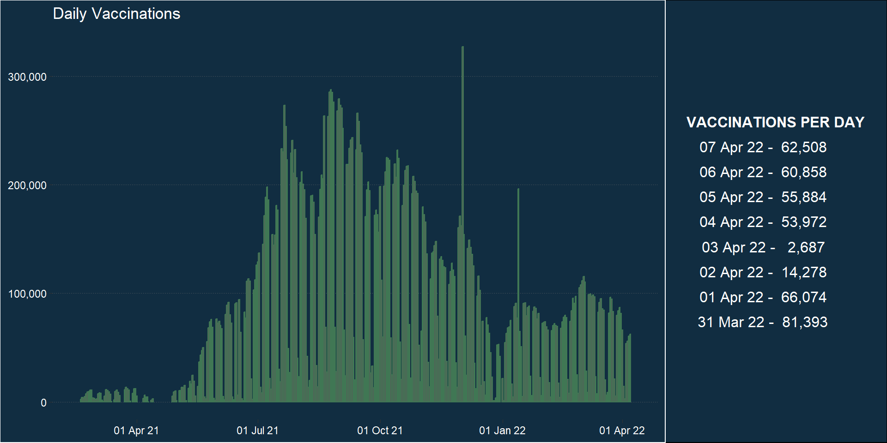
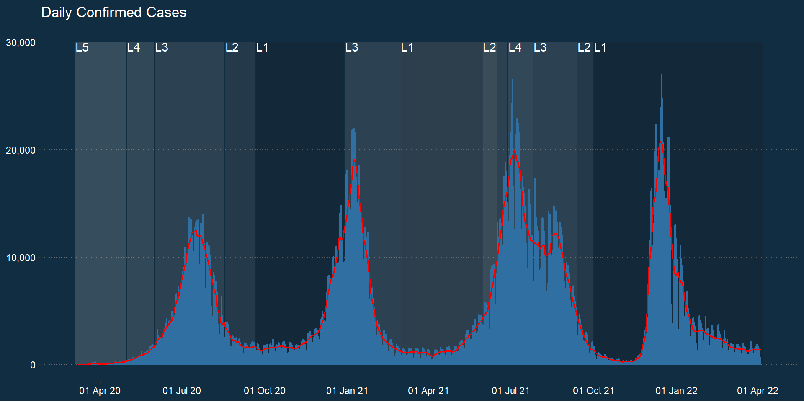
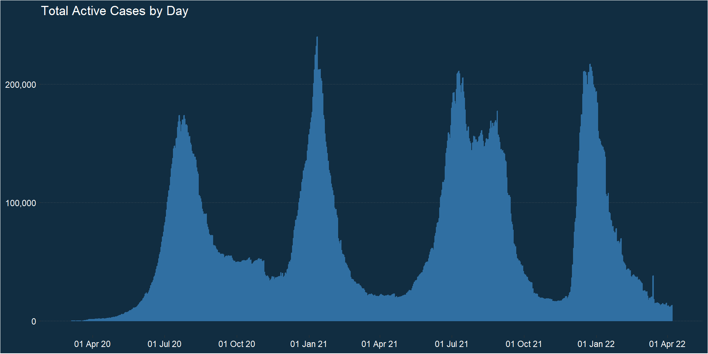
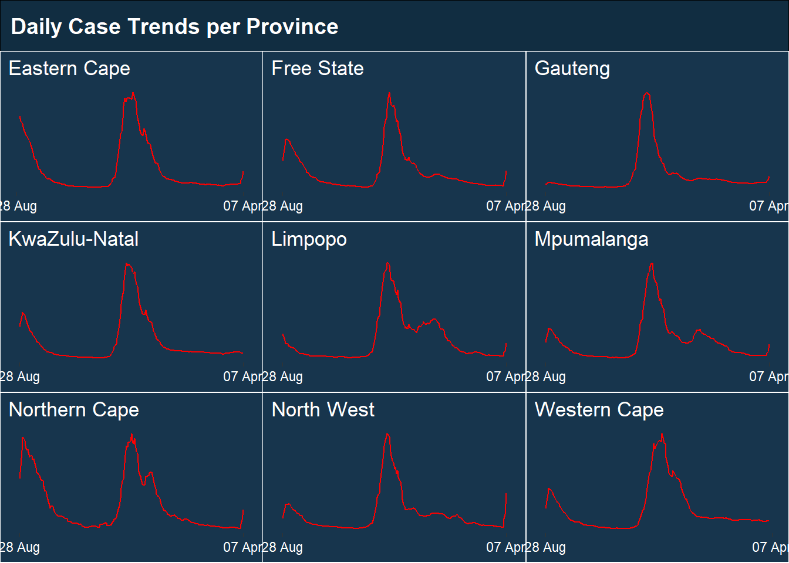
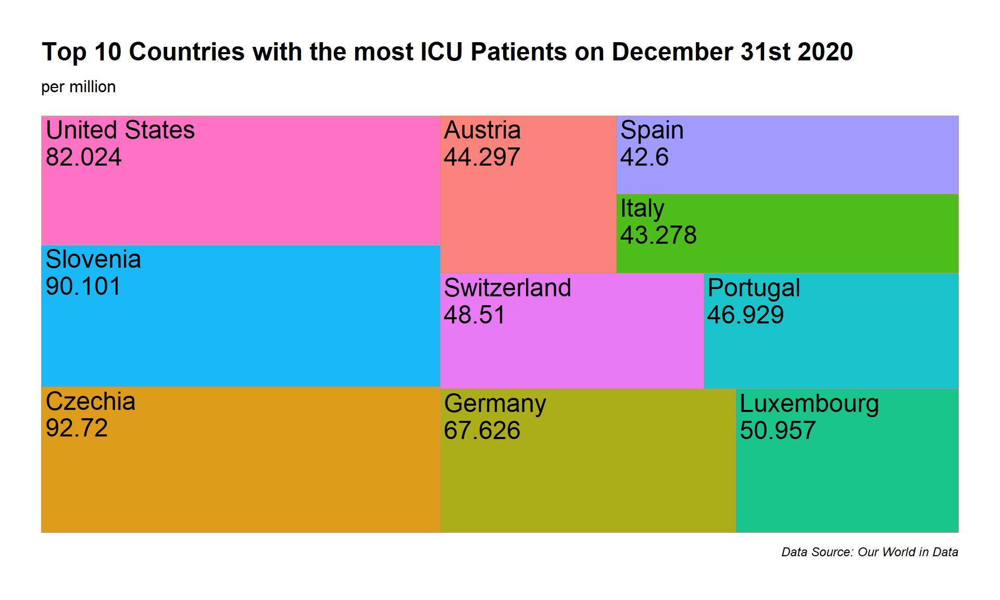
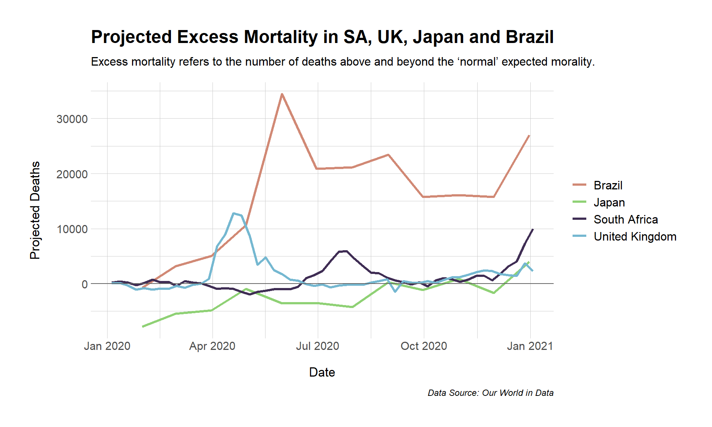
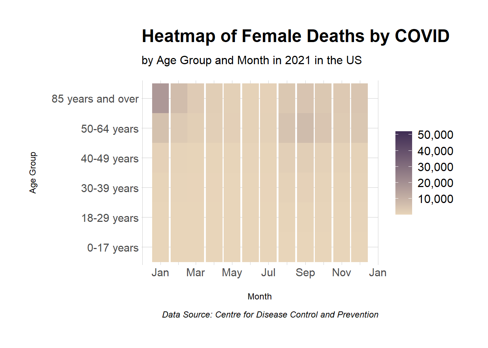
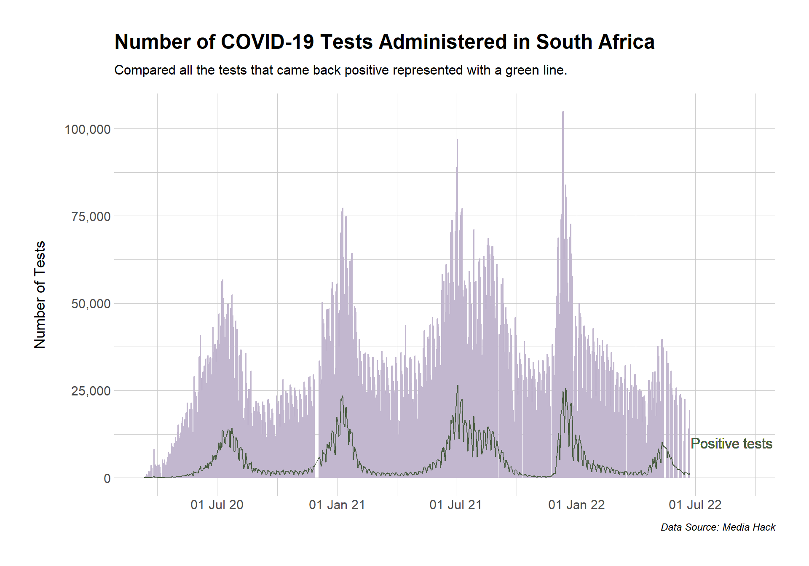

── Attaching core tidyverse packages ──────────────────────── tidyverse 2.0.0 ──
✔ dplyr 1.1.4 ✔ readr 2.1.5
✔ forcats 1.0.0 ✔ stringr 1.5.1
✔ ggplot2 3.5.1 ✔ tibble 3.2.1
✔ lubridate 1.9.3 ✔ tidyr 1.3.1
✔ purrr 1.0.2
── Conflicts ────────────────────────────────────────── tidyverse_conflicts() ──
✖ dplyr::filter() masks stats::filter()
✖ dplyr::lag() masks stats::lag()
ℹ Use the conflicted package (<http://conflicted.r-lib.org/>) to force all conflicts to become errors
library(ggplot2)library(stringr)library(zoo)
Attaching package: 'zoo'
The following objects are masked from 'package:base':
as.Date, as.Date.numeric
library(gridExtra)
Attaching package: 'gridExtra'
The following object is masked from 'package:dplyr':
combine
library(cowplot)
Attaching package: 'cowplot'
The following object is masked from 'package:lubridate':
stamp
library(ggrepel)library(scales)
Attaching package: 'scales'
The following object is masked from 'package:purrr':
discard
The following object is masked from 'package:readr':
col_factor
Attaching package: 'ggthemes'
The following object is masked from 'package:cowplot':
theme_map
Data Wrangling
All data inputting and most editing happens in this chunk.
Province data obtained from: https://health.google.com/covid-19/open-data/raw-data
case_data_clean <-read.csv("data/cumulative-case-data.csv") |>drop_na(adjusted_cumulative_cases) |>mutate(date =as.Date(date, format="%d-%m-%Y")) |>filter(date <=dmy("07-04-2022")) |>mutate(lockdown_level =case_when( date <=dmy("30-04-2020") ~"Level 5.1", date <=dmy("31-05-2020") ~"Level 4.1", date <=dmy("17-08-2020") ~"Level 3.1", date <=dmy("20-09-2020") ~"Level 2.1", date <=dmy("28-12-2020") ~"Level 1.1", date <=dmy("28-02-2021") ~"Level 3.2", date <=dmy("30-05-2021") ~"Level 1.2", date <=dmy("15-06-2021") ~"Level 2.2", date <=dmy("27-06-2021") ~"Level 3.2", date <=dmy("25-07-2021") ~"Level 4.2", date <=dmy("12-09-2021") ~"Level 3.3", date <=dmy("30-09-2021") ~"Level 2.3", date >=dmy("01-10-2021") ~"Level 1.3")) |>mutate(seven_day_mean =rollmean(cases_daily, k =7, fill =NA))level_data <- case_data_clean |>group_by(lockdown_level) |>summarise(start_date =min(date), end_date =max(date)) |>mutate(lockdown_level =str_sub(lockdown_level, end =-3))EC_data<-read.csv("data/ZA_EasternCape.csv")FS_data <-read.csv("data/ZA_FreeState.csv")GP_data <-read.csv("data/ZA_Gauteng.csv")KZN_data <-read.csv("data/ZA_KwaZuluNatal.csv")LP_data <-read.csv("data/ZA_Limpopo.csv")MP_data <-read.csv("data/ZA_MP.csv")NC_data <-read.csv("data/ZA_NorthernCape.csv")NW_data <-read.csv("data/ZA_NorthWest.csv")WC_data <-read.csv("data/ZA_WesternCape.csv")provinces_data <-bind_rows(EC_data, FS_data, GP_data, KZN_data, LP_data, MP_data, NC_data, NW_data, WC_data) |>mutate(date =as.Date(date, format="%Y-%m-%d"))world_data <-read.csv("data/owid-covid-data.csv") |>mutate(date =as.Date(date, format="%Y-%m-%d"))inf_rate_data <- provinces_data |>#calculated the infection rate for graph 6filter(new_confirmed !="") |>group_by(subregion1_name) |>summarise(inf_rate = (sum(new_confirmed)/population)*100000) |>distinct() |>arrange(desc(inf_rate))provinces_data_cut <- provinces_data |>filter(date >=dmy("28-08-2021") & date <=dmy("07-04-2022")) |>mutate(seven_day_mean = zoo::rollmean(new_confirmed, k =7, fill =NA))
Graph 1: Daily Vaccinations
daily_table <- case_data_clean |>filter(vaccinated_daily !=0) |>arrange(desc(date)) |>mutate(vaccinated_daily =format(vaccinated_daily, big.mark =",")) |>mutate(date =format(date, "%d %b %y")) |>select(date, vaccinated_daily) |>mutate(VACCINATIONS_PER_DAY =paste(date, vaccinated_daily, sep =" - ")) |>select(VACCINATIONS_PER_DAY) |>head(8) |>rename_all(~gsub("_", " ", .))daily_table <-tableGrob(daily_table, rows=NULL,theme=ttheme_minimal( #this section sets styling for the table: transparent background and setting text colourpanel.border =element_blank(),core=list(fg_params=list(hjust=0.6, col ="#ffffff"),bg_params=gpar(fill="transparent")),colhead =list(fg_params=list(col="#ffffff"))))daily_vac <- case_data_clean |>filter(vaccinated_daily !=0) |>ggplot(aes(x=date, y=vaccinated_daily)) +geom_col(color="#407754") +scale_y_continuous(labels =scales::comma) +scale_x_date(date_labels ="%d %b %y", date_breaks ="3 month") +labs(title ="Daily Vaccinations") +theme_dark()+theme(panel.border =element_blank(),plot.background =element_rect(fill="#112d41"),panel.background =element_rect((fill="#112d41")),panel.grid.major.y =element_line(linetype ="dotted"),panel.grid.minor.y =element_blank(),panel.grid.major.x =element_blank(),panel.grid.minor.x =element_blank(),text =element_text(color="#ffffff"),axis.title.x =element_blank(),axis.title.y =element_blank(),axis.text.x =element_text(color="#ffffff"),axis.text.y =element_text(color="#ffffff"), )plot_grid(daily_vac, daily_table,labels =NULL,align="v", rel_widths =c(3,1), #ensures that the graph is 3 times bigger than the tableaxis ="lrtb") +theme(plot.background =element_rect(fill ="#112d41"),panel.border =element_blank())

Graph 2: Daily Confirmed Cases
daily_con_cases <- case_data_clean |>filter(!is.na(seven_day_mean)) |>ggplot() +geom_rect(data=level_data, aes(ymin =0, ymax =30000,xmin = start_date, xmax = end_date, fill = lockdown_level), alpha =0.2, show.legend = F) +geom_col(aes(x = date, y = cases_daily),color ="#306fa2") +geom_line(aes(x = date, y = seven_day_mean), colour ="red", size =0.7) +geom_text(data = level_data, aes(x = start_date, y =30000, label =paste0(substr(lockdown_level,1,1), substr(lockdown_level,7,7))), #sets the label to show only L and level number (L1)vjust =1, hjust =0, color ="#ffffff") +scale_y_continuous(labels = scales::comma, breaks =seq(0, 30000, by =10000)) +scale_x_date(date_labels ="%d %b %y", date_breaks ="3 month") +scale_colour_grey(start =0.1,end =0.8,na.value =NA,aesthetics ="fill")+labs(x ="Date",y ="Number of Confirmed Cases",title ="Daily Confirmed Cases")+theme_dark()+theme(panel.border =element_blank(),plot.background =element_rect(fill="#112d41"),panel.background =element_rect((fill="#112d41")),panel.grid.major.y =element_line(linetype ="dotted"),panel.grid.minor.y =element_blank(),panel.grid.major.x =element_blank(),panel.grid.minor.x =element_blank(),text =element_text(color="#ffffff"),axis.title.x =element_blank(),axis.title.y =element_blank(),axis.text.x =element_text(color="#ffffff"),axis.text.y =element_text(color="#ffffff"), )
Warning: Using `size` aesthetic for lines was deprecated in ggplot2 3.4.0.
ℹ Please use `linewidth` instead.
daily_con_cases

Graph 3: Total Active Cases by Day
daily_act_cases <- case_data_clean |>ggplot() +geom_col(aes(x = date, y = active_cases), color ="#306fa2") +scale_y_continuous(labels = scales::comma, breaks =seq(0, 300000, by =100000)) +scale_x_date(date_labels ="%d %b %y", date_breaks ="3 month") +labs(x ="Date",y ="Number of Active Cases",title ="Total Active Cases by Day") +theme_dark()+theme(panel.border =element_blank(),plot.background =element_rect(fill="#112d41"),panel.background =element_rect((fill="#112d41")),panel.grid.major.y =element_line(linetype ="dotted"),panel.grid.minor.y =element_blank(),panel.grid.major.x =element_blank(),panel.grid.minor.x =element_blank(),text =element_text(color="#ffffff"),axis.title.x =element_blank(),axis.title.y =element_blank(),axis.text.x =element_text(color="#ffffff"),axis.text.y =element_text(color="#ffffff"), )daily_act_cases

Graph 4: Daily Case Trends per Province
create_province_plots <-function(provinces_data_cut, locations) { #function that creates all province graphs at once plots <-lapply(locations, function(location) { provinces_data_cut <- provinces_data_cut |>filter(subregion1_name == location &!is.na(seven_day_mean)) #filters per province name and removes NAs in 7 day average gg <-ggplot(provinces_data_cut, aes(x = date, y = seven_day_mean)) +geom_line(color ="red") +scale_y_continuous(breaks=NULL) +scale_x_date(date_labels ="%d %b",breaks =c(dmy("28-08-2021"), dmy("07-04-2022"))) +labs(x ="Date", y =NULL, title =location)+theme_dark()+theme(panel.border =element_blank(),plot.background =element_rect(fill="#17354d"),panel.background =element_rect((fill="#17354d")),panel.grid.major.y =element_blank(),panel.grid.minor.y =element_blank(),panel.grid.major.x =element_blank(),panel.grid.minor.x =element_blank(),text =element_text(color="#ffffff"),axis.title.x =element_blank(),axis.title.y =element_blank(),axis.text.x =element_text(color="#ffffff"),axis.text.y =element_text(color="#ffffff"), )ggplotGrob(gg) #returns all plots as a grob })return(plots) }locations <-unique(provinces_data_cut$subregion1_name) #creates a list of province names to be cycled through in the functionprovince_plots <-create_province_plots(provinces_data_cut, locations) #runs the function with relevant data and location listplot_row <-plot_grid(plotlist = province_plots)#add a title across the top of plot gridtitle <-ggdraw() +draw_label("Daily Case Trends per Province",fontface ='bold',x =0,hjust =0,color ="#ffffff" ) +theme(plot.margin =margin(1, 1, 1, 7) )plot_grid(title, plot_row, ncol=1, rel_heights =c(0.1,1))+theme(plot.background =element_rect(fill ="#112d41"))

Graph 5: Active Cases vs Confirmed Cases
con_v_act_cases <- case_data_clean |>ggplot(aes(x = date)) +geom_text(data =subset(case_data_clean, date ==max(date)), aes(y = active_cases, label = scales::comma(active_cases)), size =3, fontface ="bold", color ="#ffffff",nudge_y =1000, hjust =0.5, vjust =-0.9) +geom_text(data =subset(case_data_clean, date ==max(date)), aes(y = cumulative_cases, label = scales::comma(cumulative_cases)), size =3, fontface ="bold", color ="#ffffff",nudge_y =1000, hjust =0.5, vjust =-0.9) +geom_line(aes(y = cumulative_cases, color ="Confirmed"), size =1) +geom_line(aes(y = active_cases, color ="Active"), size =1) +scale_y_continuous(labels = scales::comma) +scale_x_date(date_labels ="%d/%m/%y", date_breaks ="1 year") +labs(x ="Date",# y = "Number of Active Cases",title ="Active Cases vs Confirmed Cases")+scale_color_manual(name =NULL, values =c("Confirmed"="#ce5d5d", "Active"="#208ffb"))+theme_dark()+theme(plot.background =element_rect(fill="#112d41"),panel.border =element_blank(),panel.background =element_rect((fill="#112d41")),panel.grid.major.y =element_blank(),panel.grid.minor.y =element_blank(),panel.grid.major.x =element_blank(),panel.grid.minor.x =element_blank(),text =element_text(color="#ffffff"),axis.title.x =element_blank(),axis.title.y =element_blank(),axis.text.x =element_text(color="#ffffff"),axis.text.y =element_text(color="#ffffff"),legend.position=c(.1,.8),legend.background =element_rect(fill="transparent"))
Warning: A numeric `legend.position` argument in `theme()` was deprecated in ggplot2
3.5.0.
ℹ Please use the `legend.position.inside` argument of `theme()` instead.
The following is an Rt graph made with an external data source (https://github.com/owid) that already computed the reproduction rate. This graph was left in because it is closer to the screenshot and it looks nice.
My aim with the following graphs is to first explore the state of the world during COVID and eventually narrow it down to a South African context.
Graph 8
This graph models the GDP per capita on the y-axis and the total number of COVID cases per million on the x-axis. Each bubble represents a country and the size represents the population of that country. Country’s are coloured based on their continents. Please over hover a bubble for more information.
world_bubble <- world_data_cut |>group_by(location) |>filter(date ==dmy("31-12-2020")) |>#create tool tip textmutate(tool_text =paste("Country: ", location, "\nPopulation: ", format(population, big.mark =","), "\nTotal Cases Per Million: ", format(total_cases_per_million, big.mark =","), "\nGdp per capita: ", format(gdp_per_capita, big.mark =","), sep ="")) |>ggplot(aes(x=total_cases_per_million, y=gdp_per_capita, color = continent, size=population)) +geom_point_interactive(aes(tooltip = tool_text)) +#implement tool tipscale_x_continuous(labels = scales::comma) +scale_y_continuous(labels = scales::comma) +scale_size(name =NULL, range =c(1.4, 19)) +labs(x ="COVID-19 Confirmed Cases",y ="GDP Per Capita",title ="GDP by COVID cases per million per Country",subtitle ="On December 31st 2020. Sized by population",caption ="Data Source: Our World in Data") +scale_color_ipsum(name ="Continent") +guides(size = F) +theme_ipsum(base_family ="sans",axis_title_size =15) +theme(axis.title.x =element_text(hjust =0.5, margin =margin(t =15, r =0, b =0, l =0)),axis.title.y =element_text(hjust =0.5, margin =margin(t =0, r =15, b =15, l =0)),text =element_text(size =15))girafe(ggobj = world_bubble, width =12, height =7.7)
Graph 9
This treemap models the 10 countries with the most patients in the ICU per million on December 31 2020. Each block is sized based on the number of patients, and are coloured based on their continents. This shows how many patients were critic by the end of the first year of the pandemic.
tree_map <- world_data |>filter(!is.na(icu_patients_per_million)) |>filter(date ==dmy("31-12-2020")) |>arrange(desc(icu_patients_per_million)) |>head(10) |>ggplot(aes(fill = location,area = icu_patients_per_million,label =paste(location, icu_patients_per_million, sep ="\n"))) +geom_treemap(aes(color = continent),show.legend = F, alpha =0.9) +geom_treemap_text() +scale_color_ipsum() +labs(title ="Top 10 Countries with the most ICU Patients on December 31st 2020",subtitle ="per million",caption ="Data Source: Our World in Data") +theme_ipsum(base_family ="sans") +theme(axis.title.x =element_text(size =13, hjust =0.5, margin =margin(t =15, r =0, b =0, l =0)),axis.title.y =element_text(size =13, hjust =0.5, margin =margin(t =0, r =15, b =15, l =0)),text =element_text(size =15))tree_map

Graph 10
Graph 10 shows the excess mortality of South Africa, the United Kingdom, Japan and Brazil. These countries were chosen to show the difference in excess morality between developed and developing countries.
excess_deaths_world <- excess_deaths|>group_by(location)|>filter(location =="South Africa"| location =="United Kingdom"| location =="Japan"| location =="Brazil") |>ggplot(aes(x = date, y = excess_proj_all_ages, color = location))+geom_line(size =1.1) +geom_hline(yintercept =0, color ="#636363") +scale_color_ipsum(name =NULL) +labs(x ="Date", y ="Projected Deaths", title ="Projected Excess Mortality in SA, UK, Japan and Brazil",subtitle ="Excess mortality refers to the number of deaths above and beyond the ‘normal’ expected morality.",caption ="Data Source: Our World in Data") +theme_ipsum(base_family ="sans") +theme(axis.title.x =element_text(size =13, hjust =0.5, margin =margin(t =15, r =0, b =0, l =0)),axis.title.y =element_text(size =13, hjust =0.5, margin =margin(t =0, r =15, b =15, l =0)),text =element_text(size =15))excess_deaths_world

Graph 11
This graph is a heatmap to show the progression of deaths of females per age group due to COVID in the United States.
USA_heatmap <- USA_data |>filter(year ==2021) |>group_by(month) |>group_by(Age.Group)|>ggplot(aes(x = date, y = Age.Group, fill = COVID.19.Deaths)) +geom_tile()+scale_fill_gradient(name =NULL, low ="#E8D5BA", high="#3F2D54", label = scales::comma) +scale_x_date(date_labels ="%b", date_breaks ="2 month")+labs(x ="Month", y ="Age Group", title ="Heatmap of Female Deaths by COVID",subtitle ="by Age Group and Month in 2021 in the US",caption ="Data Source: Centre for Disease Control and Prevention")+theme_ipsum(base_family ="sans")+theme(axis.title.x =element_text(hjust =0.5, margin =margin(t =15, r =0, b =0, l =0)),axis.title.y =element_text(hjust =0.5, margin =margin(t =0, r =15, b =15, l =0)),text =element_text(size =15))USA_heatmap

Graph 12
This graphs maps two data points to each South African province. The lighter bubble represents the population of that province, and the darker bubble shows the number of confirmed cases for that province. Please hover over each bubble for more information. Also please be aware the size has been hard coded to fit into the window which may cause the map to be slightly distorted, this can be adjusted for a better view.
provinces_map <-ggplot(data = SA, aes(x = long, y = lat)) +geom_polygon(aes(group = group), fill ="white", color ="black") +geom_point_interactive(data = provinces_data_map, aes(x = longitude, y=latitude, size=population, color=subregion1_name, tooltip = tool_text), alpha =0.4, show.legend = F)+geom_point_interactive(data = provinces_data_map, aes(x = longitude, y=latitude, size=cumulative_confirmed, color=subregion1_name, tooltip = tool_text), show.legend = F) +scale_size(range =c(1, 25)) +scale_color_ipsum(name =NULL) +labs(title ="Total Confirmed COVID-19 Cases per Province",subtitle ="Compared to Population per Province",caption ="Data Source: Our World in Data")+theme(panel.grid =element_blank(),plot.background =element_blank(),panel.background =element_blank(),axis.line =element_blank(),axis.text =element_blank(),axis.title =element_blank(),axis.ticks =element_blank(),title =element_text(face ="bold"),plot.margin =margin(t=1, l=0, r=0,b=2), ) +coord_equal(0.9)girafe(ggobj = provinces_map, width =7, height=4)
Graph 13
This graph plots the number of COVID test administered in South Africa from 2020 to 2022. An additional line is plotted to show the number of positive tests.
test_vs_pos_data <- world_data |>mutate(date =as.Date(date, format="%Y-%m-%d")) |>filter(location =="South Africa") |>filter(!is.na(new_tests) &!is.na(positive_rate)) |>mutate(postive_tests = new_tests * positive_rate) test_vs_pos <- test_vs_pos_data |>ggplot(aes(x = date)) +geom_col(aes(y = new_tests), color ="#c2b7cf") +geom_line(aes(y = postive_tests), color ="#4b5e43") +geom_text(aes(x =c(max(test_vs_pos_data$date)+65), y =10000, label ="Positive tests"),size =4.5, color ="#4b5e43") +scale_x_date(date_labels ="%d %b %y", date_breaks ="6 month",limits =c(min(test_vs_pos_data$date), max(test_vs_pos_data$date) +85)) +scale_y_continuous(labels = scales::comma) +labs(x =NULL,y ="Number of Tests", title ="Number of COVID-19 Tests Administered in South Africa",subtitle ="Compared all the tests that came back positive represented with a green line.",caption ="Data Source: Media Hack")+theme_ipsum(base_family ="sans")+theme(axis.title.x =element_text(size =13, hjust =0.5, margin =margin(t =15, r =0, b =0, l =0)),axis.title.y =element_text(size =13, hjust =0.5, margin =margin(t =0, r =15, b =15, l =0)),text =element_text(size =8))test_vs_pos

Graph 14
The following graph plots the proportion of each province’s population that is vaccinated as a percentage.
vaccination_per_province <- province_population |>select(-population) |>pivot_longer(cols =-subregion1_name &-subregion1_code, #convert the data into the correct formatnames_to ="status", values_to ="count" ) |>ggplot(aes(x = subregion1_code, y = count, fill = status))+geom_bar(position =position_fill(), stat ="identity")+scale_fill_manual(values =c("#796c88", "#b1df9f"), name =NULL,)+labs(x ="Province", y ="Population (%)", title ="Proportion of Vaccinated Population",subtitle ="Per South African Province",caption ="Data Source: COVID Reproduction Live")+theme_ipsum(base_family ="sans")+theme(axis.title.x =element_text(size =13, hjust =0.5, margin =margin(t =15, r =0, b =0, l =0)),axis.title.y =element_text(size =13, hjust =0.5, margin =margin(t =0, r =15, b =15, l =0)),text =element_text(size =15))vaccination_per_province